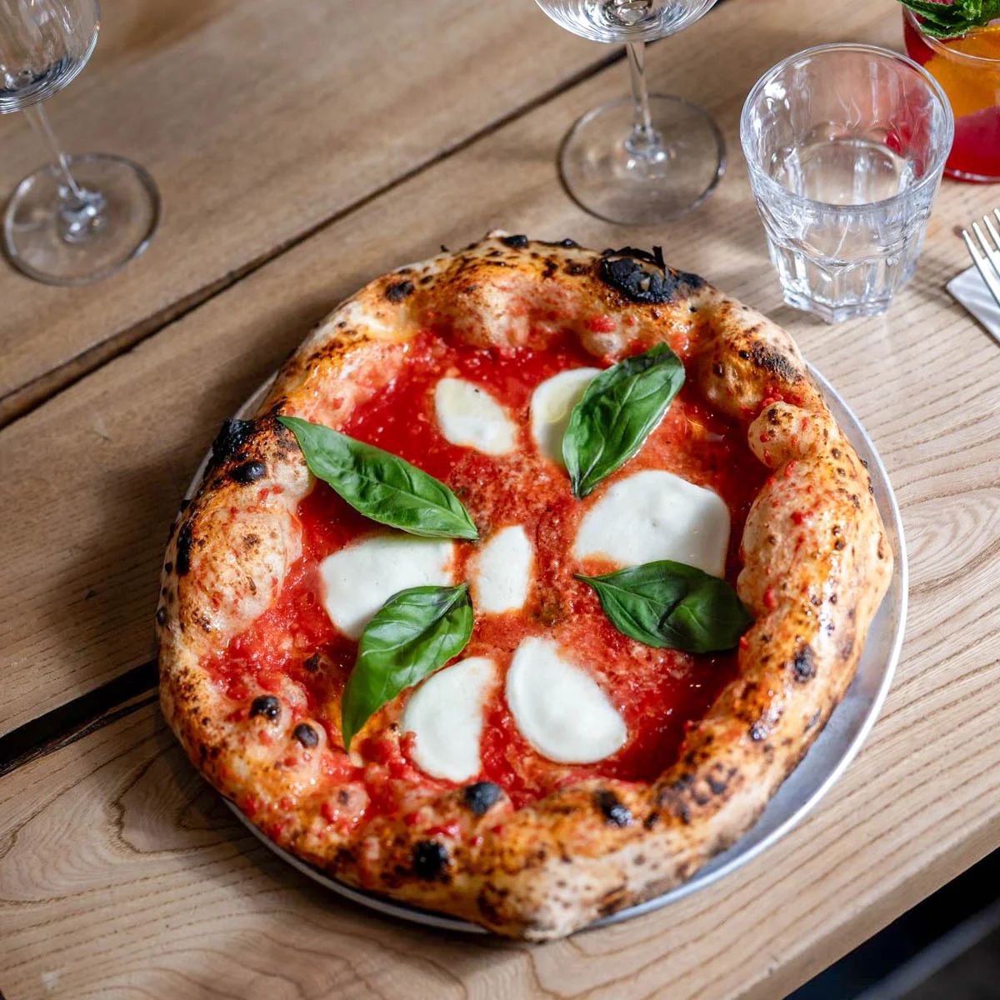

Pizza

Description
This is the introductory description for the recipe.
Ingredients:
- 1 One Hour Napelatana Pizza Dough
- 200g Fior di Latte or Fresh Homemade Mozzarella
- 1 Cup Napoletana Tomato Sauce
- Basil for topping
- For the tomamto sauce:
- 1 x 28 oz can San Marzano Tomatoes
- Salt to taste
- 1 tablespoon tomato paste
Steps:
- Place one baking steel/stone on the second highest rack of the oven and another one at the bottom most rack. Preheat oven at 500 F for 1 hour.
- Dust your countertop with flour and starting with one portion of dough at a time, add the dough ball over the flour. Starting from the center of the dough, press down on the dough and create a rim around the side.
- Continue pressing down the center to stretch the dough. Then, hold the dough from the rim and rotate to let gravity stretch if further. You can also you use knuckles to stretch the dough, until the diameter is about 10 inches.
- Set oven to Broil mode, let top steel/stone heat for 8-10 minutes.
- Dust a wooden pizza peel with semolina and place the stretched dough on the peel.
- Add 3-4 tablespoon of the tomato sauce and spread until the edge of the pizza. Tear layers of the fiore di latte and dot 5-6 slices around the pizza.
- In a swift push and pull motion, place the pizza on the top baking steel/stone.
- Bake for 1 1/2 - 2 minutes or until the crust has some char or brown spots and the cheese has molten.
- Then transfer the pizza to the bottom steel/stone to finish off the crust of the pizza, about 30 seconds to 1 minute.
- Remove the pizza from the oven and top with Parmesan cheese, brush the crust with olive oil and add fresh basil. Serve hot!
Home